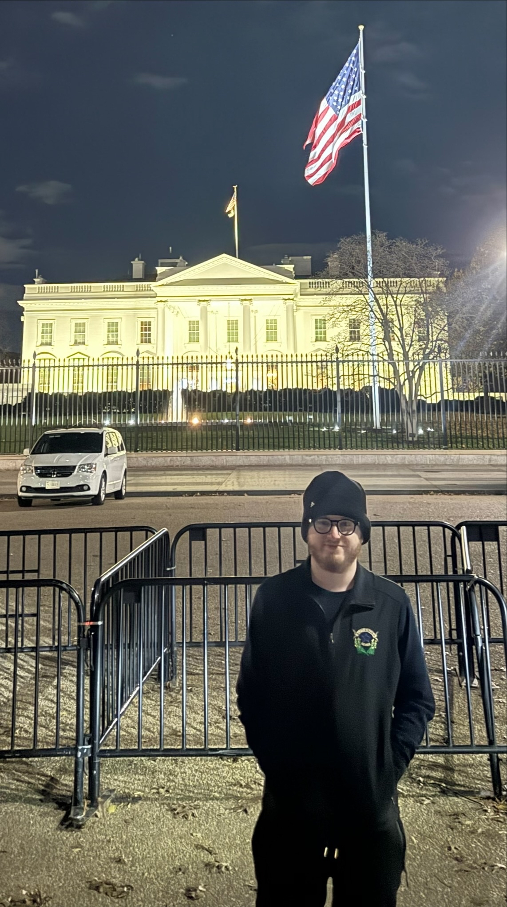

My name is John Ross and I am currently employed at the Nevada State Legislature as a A/V Technician. I support Legislative and State Agency Meetings which includes camera switching, managing A/V equipment and digital signage. I'm going back to college to get my degree in computer science to one get a degree to not hold me back later on in my career and two is to learn more about technology and system design.
My engineering interest are both computer programming and networking. Mainly I use C as my main programming language and I enjoy writing graphics engines with OpenGL. I have a networking homelab which consists of a 5520-24W Extreme switch, A VyOS Router and other hardware. Currently I have running an instance of Eve-NG, Netbox, Plex, Unifi Server, 2 Apache web servers, and a PiHole instance. I wish to impact the world by making clean code that functions like it is designed to.
I currently am learning C#, .NET and Blazor. I want to complete my clone of the Nevada Legislative Website . After this project is complete I plan on learning more linear algebra so I can make better 3D graphics engines without relying on libraries to do the math for me. The engineer I want to be is one who knows a system from the ground up and can explain the details in a network or code repository. The plan I have put out for myself is to start college which I currently am doing. Continue working closly with the Networking Engineers at my day job and learn from them. Then I will take and pass my CCNA and CCNP. All the while I continue down my programming path by being self taught.